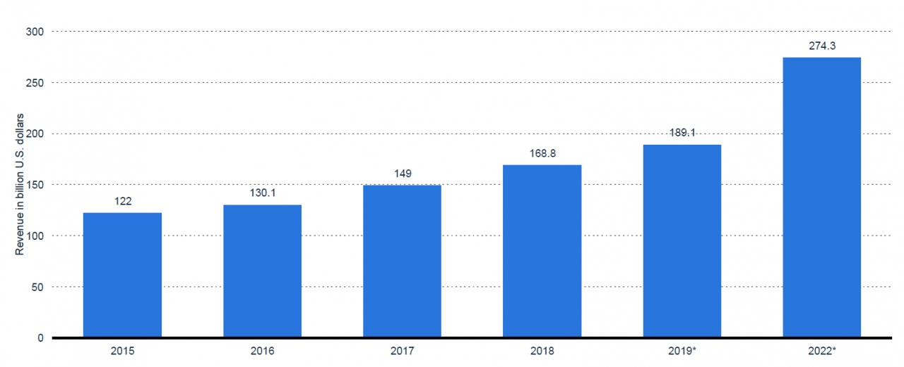

빅데이터 시장 전망

전 세계 빅데이터와 비즈니스 분석 시장 매출은 2018년 1688억 달러(약 185조 원)에서
2022년 2743억 달러(약 300조 원)로 성장해 연평균 성장률 13.2%를 기록할 것으로 전망된다.
2021년까지 전 세계 클라우드 데이터 센터 IP 트래픽은 약 19.5ZB에 이르며, 커넥티드 IoT 장치는 2015년에 79.4ZB의 데이터를 생성할 것으로 분석된다.
비즈니스 분석 예측 분석, 데이터 마이닝과 같은 고급 분석 도구는 데이터에서 가치를 추출하고 비즈니스 통찰력을 창출하는 데 도움이 된다.
은행들은 빅데이터와 비즈니스 분석 기술을 최대한 활용하고 있으며, 비즈니스 인텔리전스와
분석 소프트웨어 애플리케이션 시장의 규모는 2022년에 약 145억 달러(약 15조 원)에 이를 것으로 예측하고 있다.
1
2
3
4